Aprendizagem Automática
Support Vector Machines, part 2
Ludwig Krippahl
SVM-2
Summary
- Soft Margins
- Kernel Trick
- Regularization in SVM
- (Assignment 1)
Soft Margins
- A linear SVM works if the classes are linearly separable:
argmaxα⃗ ∑n=1Nαn−12∑n=1N∑m=1Nαnαmynymx⃗ Tnx⃗ m
Soft Margins
- A linear SVM works if the classes are linearly separable
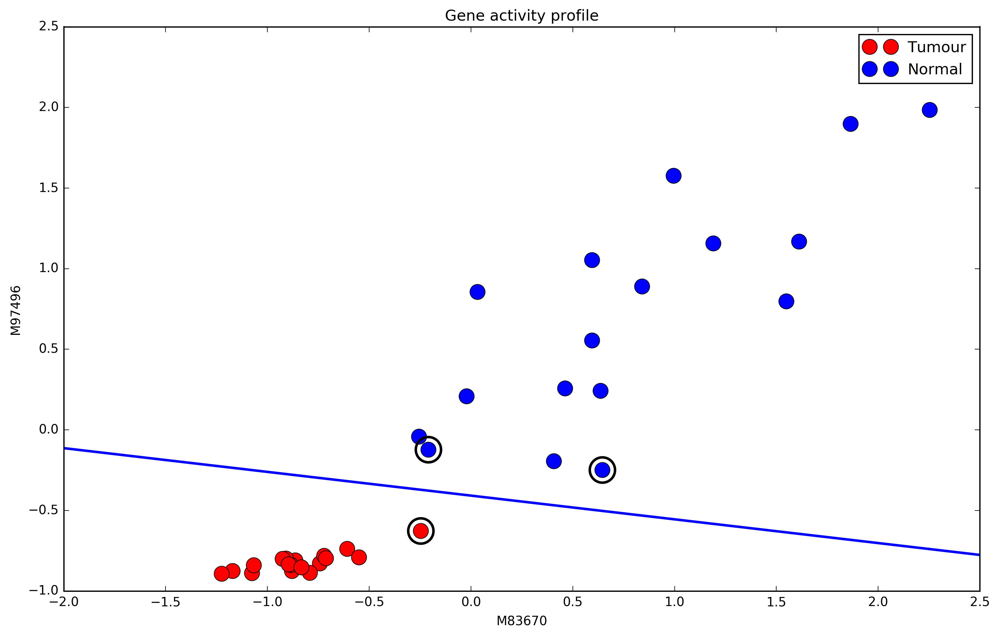
Soft Margins
- With this constraint, will not work if the classes are not linearly separable
argmaxα⃗ ∑n=1Nαn−12∑n=1N∑m=1Nαnαmynymx⃗ Tnx⃗ m
∑n=1Nαnyn=0αn≥0
- If vectors are surrounded by vectors of the other class, the α values can increase to infinity and there is no maximum for the function.
Soft Margins
- With this constraint, will not work if the classes are not linearly separable
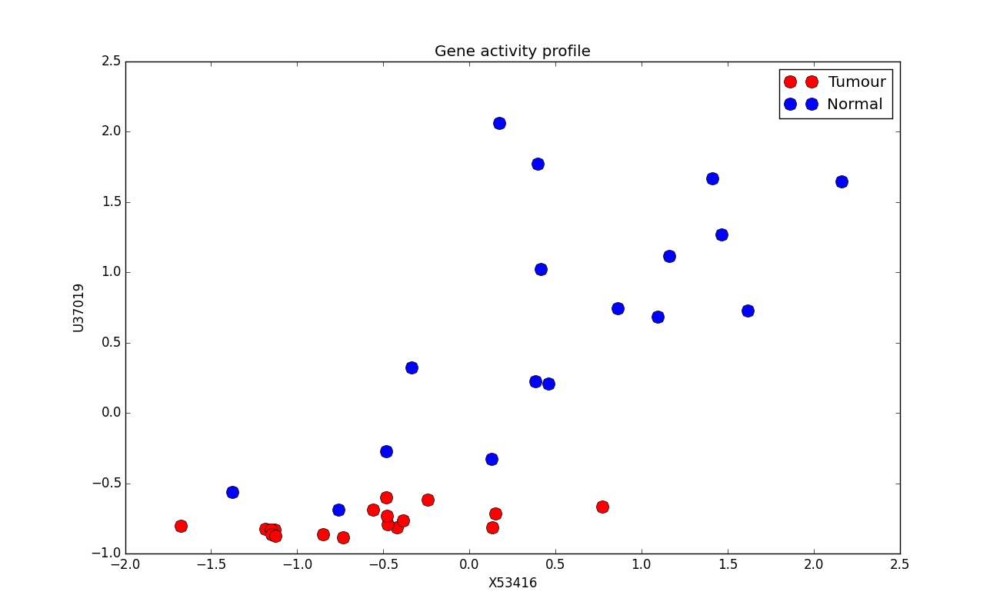
Soft Margins
- Instead of forcing margin to be at least 1
yn(w⃗ Tx⃗ n+w0)≥1,∀n∈N
- Allow a slack ξn for each vector x⃗ n
yn(w⃗ Tx⃗ n+wo)≥1−ξn,∀n∈N
- With ξ≥0 , as it is a distance to the margin
- if 0<ξ<1, then point x⃗ is inside the margin
- if ξ>1, then point x⃗ is misclassified
- We want to maximize the margin, minimizing ||w⃗ ||2, but also penalizing deviations from the margin
C∑n=1Nξn+12||w⃗ ||2
Soft Margins
- New Lagrangian:
L(w⃗ ,b,α⃗ ,μ⃗ ,ξ⃗ )=12||w⃗ ||2+C∑n=1Nξn−C∑n=1Nαn(yn(w⃗ Tx⃗ +b)−1+ξn)−∑n=1Nμnξn
- Setting the derivatives to 0, same dual problem:
argmaxα⃗ ∑n=1Nαn−12∑n=1N∑m=1Nαnαmynymx⃗ Tnx⃗ m
- But different constraints
∑n=1Nαnyn=0
δLδξn=0⇔C−αn−μn=0⇔0≤αn≤C
Soft Margins
argmaxα⃗ ∑n=1Nαn−12∑n=1N∑m=1Nαnαmynymx⃗ Tnx⃗ m
∑n=1Nαnyn=00≤αn≤C
- Intuitively: upper bound on penalization for margin
H = H_matrix(Xs,Ys)
A = Ys[:,0]
cons = {'type':'eq',
'fun':lambda alphas: np.dot(A,alphas),
'jac':lambda alphas: A}
bounds = [(0,C)]*Xs.shape[0]
x0 = np.random.rand(Xs.shape[0])
sol = minimize(loss, x0, jac=jac, constraints=cons,
method='SLSQP', bounds = bounds)
Soft Margins
- Allow some margin violations or errors (C=10)
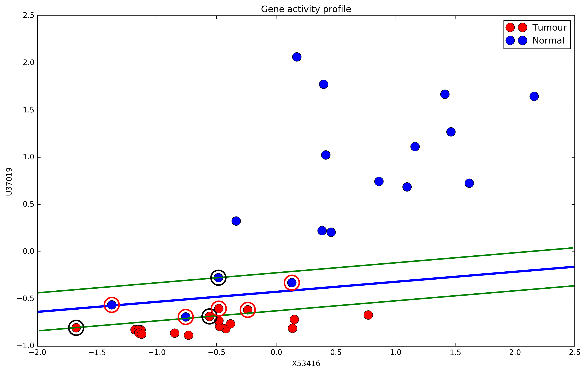
Soft Margins
[ 1.00000000e+01 -2.89129433e-14 1.62820017e-14 1.17348602e-12
2.02077358e-15 6.68162351e+00 1.00000000e+01 1.06304794e-12
1.17694556e-12 7.83296084e-13 -2.99848509e-14 1.02238339e-12
1.07337714e-14 5.85150761e+00 7.23253298e-13 5.11229227e-13
9.29336289e-14 -1.36784400e-13 -1.45436364e-14 1.07235005e-13
3.97298470e-15 1.00000000e+01 -2.91633573e-14 1.00000000e+01
-6.93493037e-14 1.00000000e+01 1.66339014e-13 -1.23618374e-13
-3.70160694e-16 4.45905935e-14 -1.87089595e-14 2.70387604e-13
-2.75057753e-14 9.43679075e-14 2.53313112e+00 -1.08786818e-13]
Soft Margins
- Support vectors, including vectors inside margins (red)
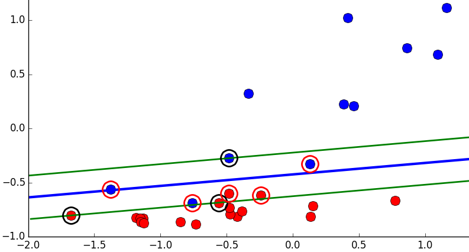
SVM-2
Non-linear separation
Non-linear separation
- Soft margins ok for slight overlap
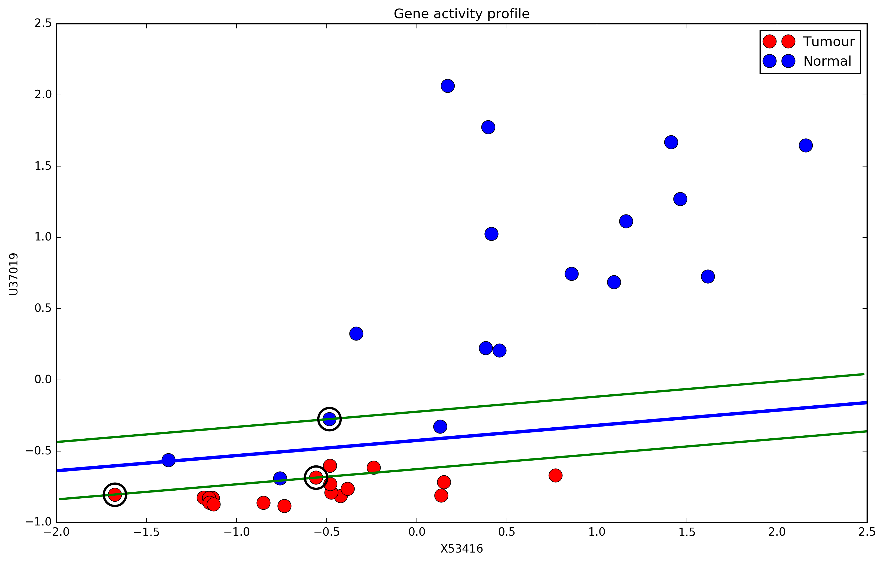
Non-linear separation
- But insufficient if frontier is too far from linear
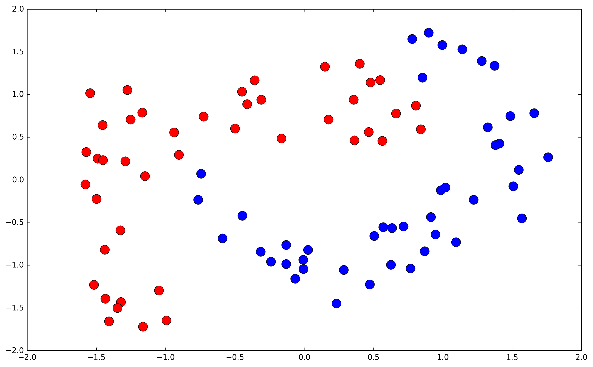
Non-linear separation
- But insufficient if frontier is too far from linear
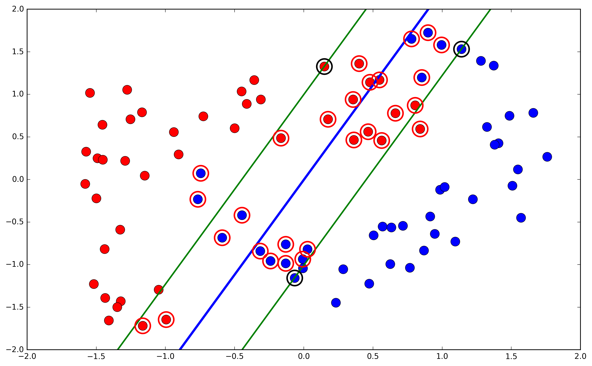
Non-linear separation
- As always, the trick is to do linear separation after a nonlinear transformation.
- For example, expand the features polynomially
- In SVM this is easy to do with the Kernel Trick
Kernel trick
The kernel trick
- A kernel function is a function of two vectors whose result is the inner product of some function of each vector:
K(u⃗ ,v⃗ )=ϕ(u⃗ )Tϕ(v⃗ )
- Useful if K(u⃗ ,v⃗ ) is easier to compute than ϕ(u⃗ )Tϕ(v⃗ )
- For example ϕ2(x⃗ )=[1,2√x1,2√x2,2√x1x2,x21,x22]T
ϕ2(u⃗ )Tϕ2(v⃗ )=(u⃗ Tv⃗ +1)2
- More generally, Kϕn(u⃗ ,v⃗ )=(u⃗ Tv⃗ +c)n
Kernel trick
- So now we solve:
argmaxα⃗ ∑n=1Nαn−12∑n=1N∑m=1NαnαmynymK(x⃗ n,x⃗ m)
- Where K(x⃗ n,x⃗ m) is the kernel function for some non-linear expansion ϕ of our original data
- To classify new points, we do not compute w⃗ or w0, because the hyperplane is in the space of ϕ(x⃗ )
- Instead, we compute the class of xt→ from the support vectors:
w⃗ Tϕ(xt→)+w0=∑n=1NαnynK(xn→,xt→)
Kernel trick
- Example, using a polynomial kernel of degree d:
Kϕ(x⃗ d)(x1→,x2→)=(x1→Tx2→+1)d
def H_poly(X,Y,d):
H = np.zeros((X.shape[0],X.shape[0]))
for row in range(X.shape[0]):
for col in range(X.shape[0]):
k = (np.dot(X[row,:],X[col,:])+1)**d
H[row,col] = k*Y[row]*Y[col]
return H
- Evaluating a point:
w⃗ Tϕ(xt→)+w0=∑n=1NαnynKϕ(x⃗ d)(xn→,xt→)
def poly_k_class(X,alphas,Y,xt,n):
s = 0
for ix in range(len(alphas)):
s = s + (np.dot(X[ix,:],xt)+1)**n*Y[ix]*alphas[ix]
return s
Kernel trick
from sklearn import svm
sv = svm.SVC(C=C,kernel = 'poly', degree = poly, coef0 = 1)
sv.fit(Xs,Ys[:,0])
- Note: Implementation examples here are only to help explain the algorithm. It is best to use optimized implementations.
Kernel trick
- Polynomial of Degree 2, C = 1:
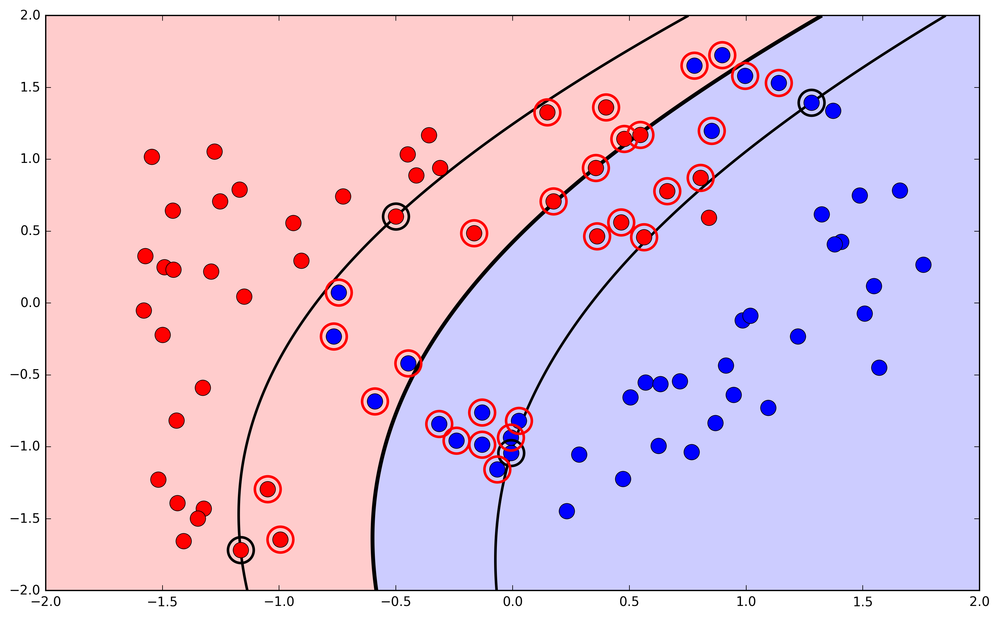
Kernel trick
- Polynomial of Degree 3, C = 1:
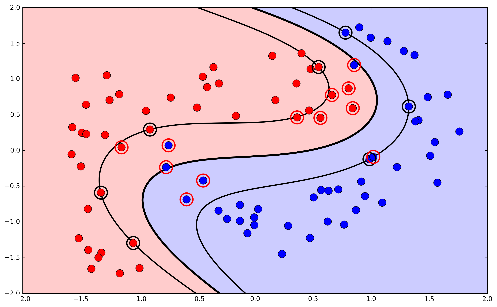
Kernel trick
- Polynomial of Degree 3, C = 10:
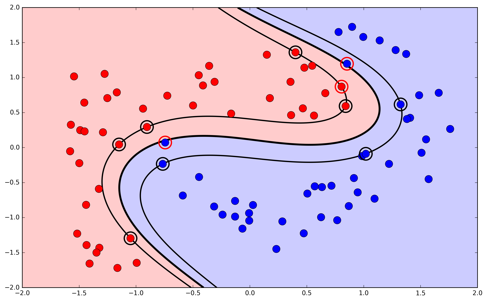
Kernel trick
- Polynomial of Degree 3, C = 1000 (higher C, less regularization):
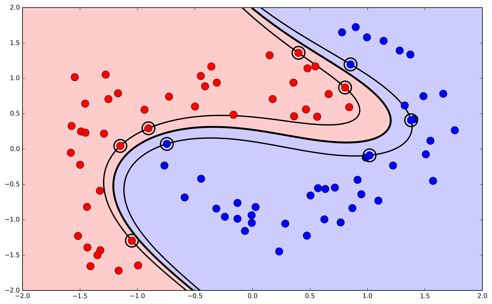
Kernel trick
- Gaussian Radial Basis Function kernel:
K(x1→,x2→)=e−||x1→−x2→||22σ2
- In Scikit-Learn:
K(x1→,x2→)=e−γ||x1→−x2→||2
from sklearn import svm
sv = svm.SVC(C=C,kernel = 'rbf', gamma=gamma)
sv.fit(Xs,Ys[:,0])
Kernel trick
- Gaussian RBF Kernel, γ=0.01, C = 1
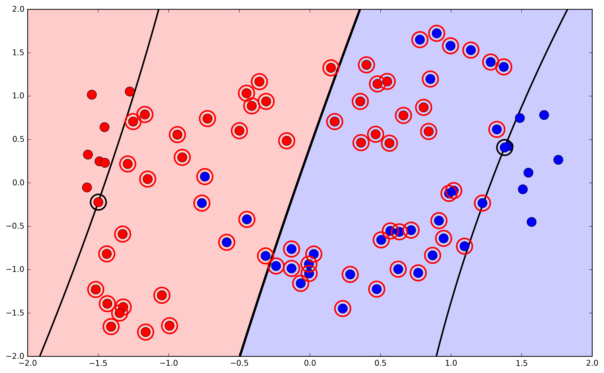
Kernel trick
- Gaussian RBF Kernel, γ=0.1, C = 1
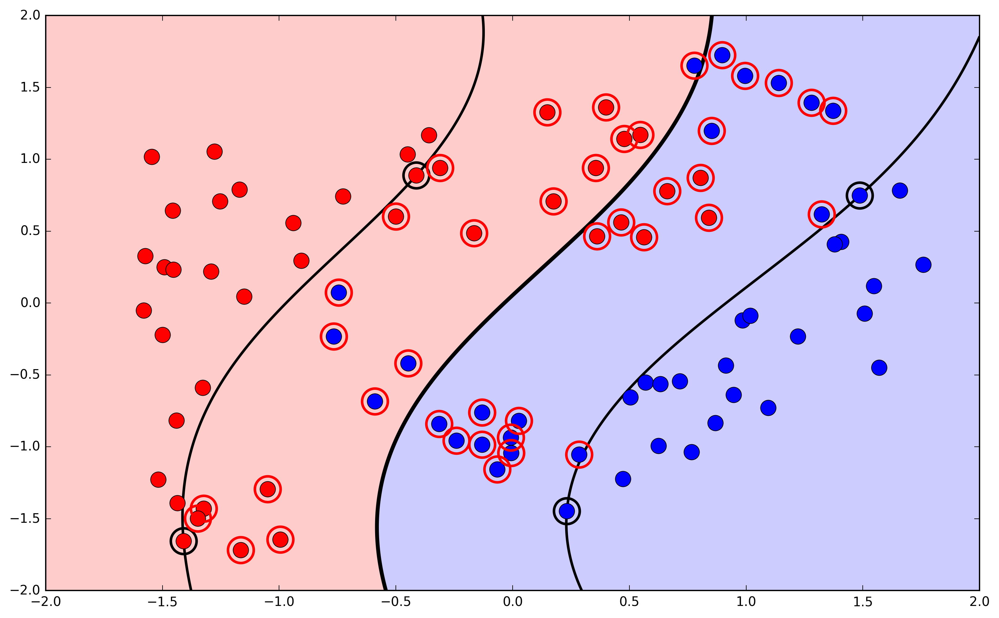
Kernel trick
- Gaussian RBF Kernel, γ=0.5, C = 1
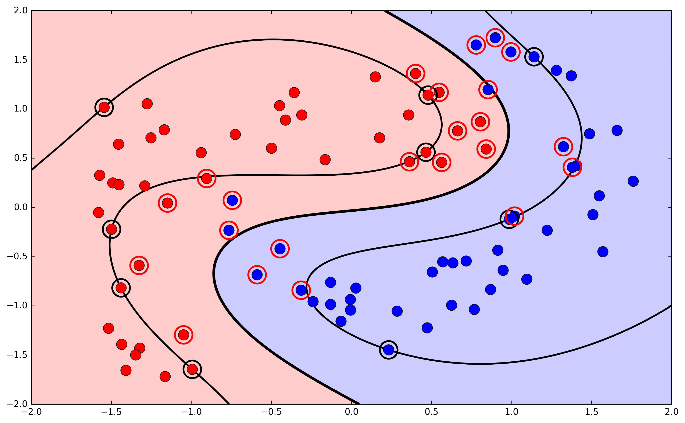
Kernel trick
- Gaussian RBF Kernel, γ=2, C = 1
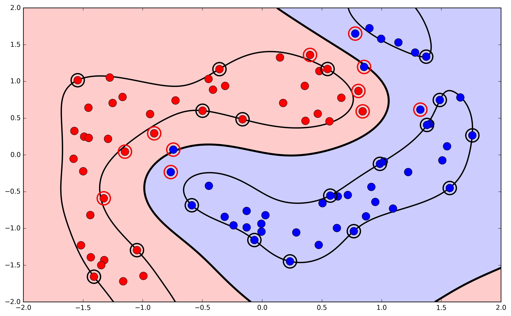
Kernel trick
- Gaussian RBF Kernel,, γ=0.01, C = 1000
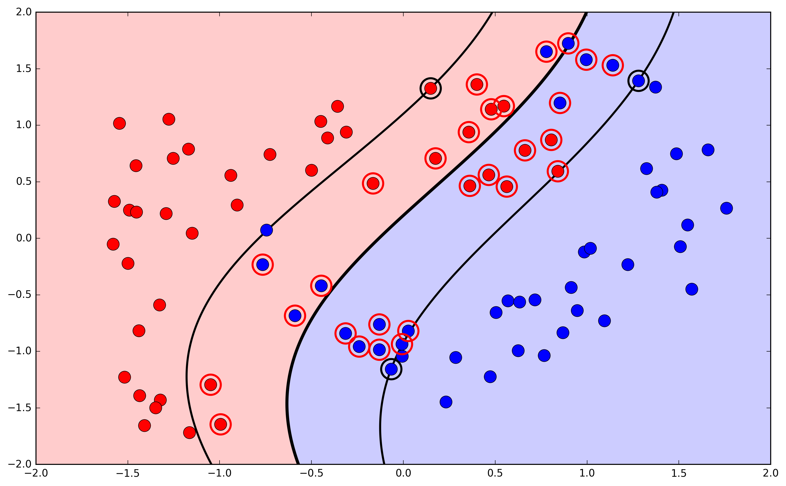
Kernel trick
- Gaussian RBF Kernel,, γ=0.1, C = 1000
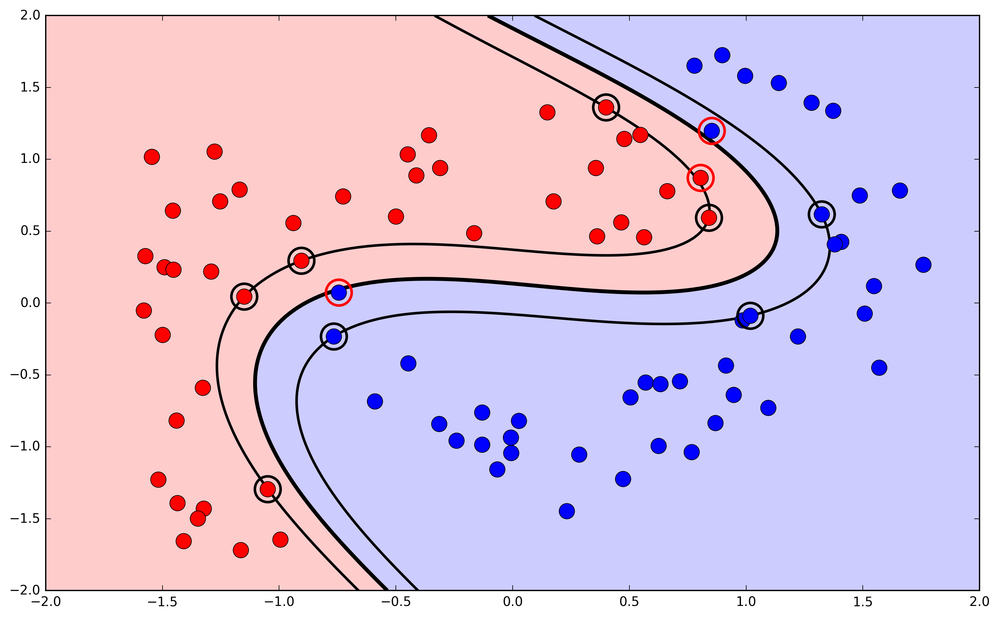
Kernel trick
- Gaussian RBF Kernel,, γ=0.5, C = 1000
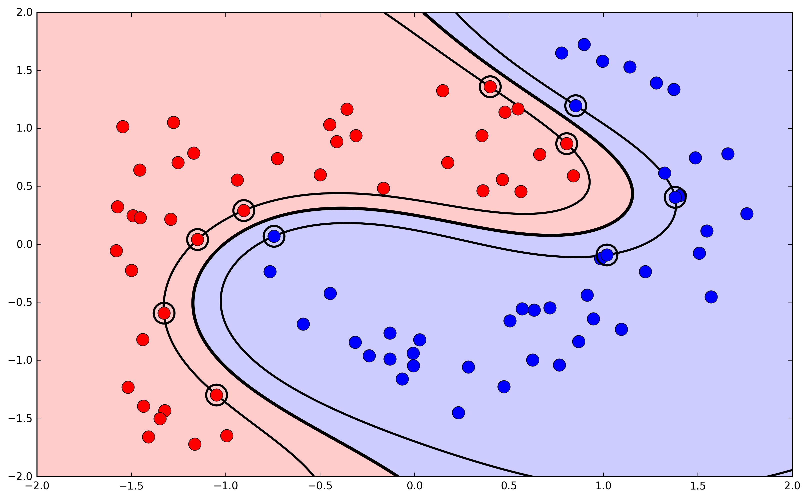
Kernel trick
- Gaussian RBF Kernel,, γ=2, C = 1000
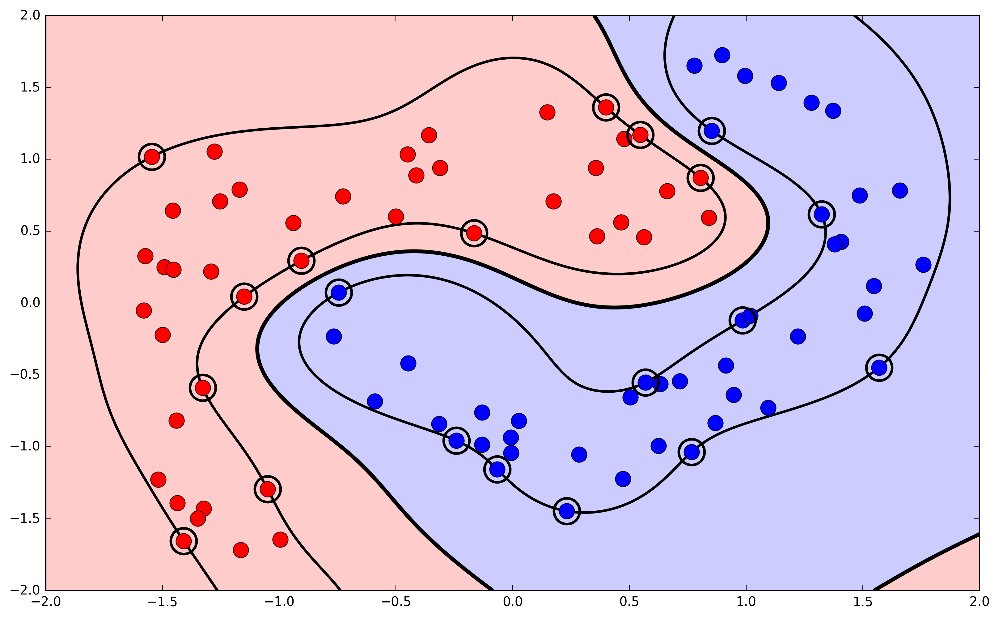
Aprendizagem Automática
Assignment 1
Assignment 1
Classify bank notes
- Four features (from scans of bank notes), continuous
- Do not expand (that was for illustrating the concept)
- Three classifiers:
- Naïve Bayes with KDE (yours), Gaussian NB and SVM (sklearn)
- Implement Naïve Bayes using KDE from Scikit-Learn
- Optimize parameters (KDE bandwidth and gamma for SVM)
- Compare using approximate normal and McNemar's test
- Submit code, plots and answered question form
- Optional: optimize gamma and C for SVM, compare
- Check page for instructions (and updates)
SVM-2
Summary
- Soft margin
- Use slack variables ξ
- End result is same, but with upper limit C on α
- Non-linear classification with SVM
- Kernel trick: use function of inner products
- Kernel examples, sklearn.svm
- Regularization: soft margins
Further reading
- Alpaydin, Sections 13.1 - 13.8
- Marsland, Chapter 5
- Bishop, Section 7.1
Aprendizagem Automática
Support Vector Machines, part 2
Ludwig Krippahl